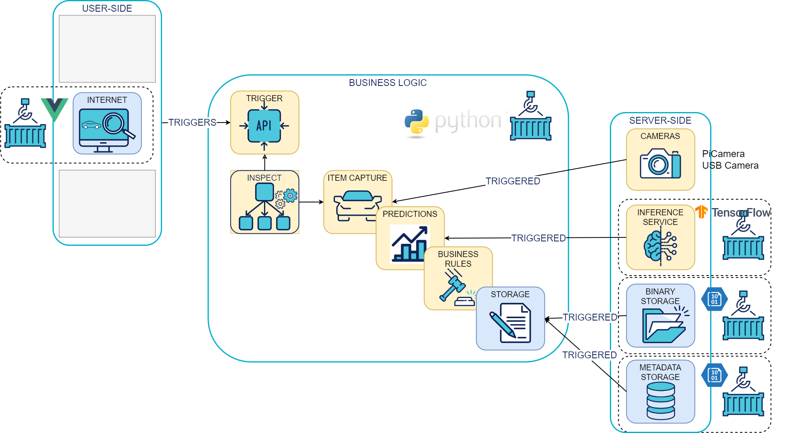

Edge Orchestrator
The edge_orchestrator orchestrates the following steps as soon as it is triggered:
- image capture
- image backup
- metadata backup
- model inference on images
- saving results

Set up your development environment
To facilitate the installation of the development environment, a Makefile automates tasks:
$ make
❓ Use `make <target>'
conda_env 🐍 Create a Python conda environment
dependencies ⏬ Install development dependencies
tests ✅ Launch all the tests
unit_tests ✅ Launch the unit tests
integration_tests ✅ Launch the integration tests
functional_tests ✅ Launch the functional tests
pyramid ⨺ Compute the tests pyramid
pyramid_and_badges 📛 Generate Gitlab badges
Python interpreter installation
The project uses conda to manage Python virtual environments Miniconda installation guide.
Install conda on MacOS
The most direct way to install conda is still Homebrew:
brew update
brew install --cask miniconda
Initialize the project environment
Once Miniconda is installed, create the Python virtual environment and install its dependencies using the Makefile:
cd edge_orchestrator
make conda_env
Install project dependencies
make dependencies
Setuptools "editable mode"
To be able to benefit from Python packaging without being impacted during local development (i.e. without having to rebuild a package each time it is updated), we use the editable mode (see the official pip doc).
pip install -e .
During the installation of the development environment, the above command will have the following effect:
A file edge_orchestrator.egg-link was created in the edge_orchestrator virtual environment with the following content:
cat /usr/local/Caskroom/miniconda/base/envs/edge_orchestrator/lib/python3.9/site-packages/edge_orchestrator.egg-link
/path/to/project/sources/vio_edge/edge_orchestrator
Thus, thanks to the egg-link, the python module edge_orchestrator is properly installed as a library in the virtual environment, but does not require regular repackaging after an update in local.
Setuptools "development mode"
To be able to install the library and its development dependencies (test libraries):
pip install -e ".[dev]"
Setuptools "console_scripts" EntryPoints
In the edge_orchestrator.egg-link file of the edge_orchestrator, the following entry_points block is configured
setup(
name="edge_orchestrator",
# [...]
entry_points={
'console_scripts': [
'edge_orchestrator = edge_orchestrator.__main__:main',
],
},
)
The setuptools package allows you to configure different types of scripts, including console_scripts, which will generate a "shim" shell script that will be placed on the PATH and will call the edge_orchestrator.main:main function as configured.
This edge_orchestrator edge_orchestrator is located in the virtual environment created during project installation.
When the virtual environment is activated (by running conda activate edge_orchestrator), the $PATH environment variable is configured to point to the bin/ folder of the virtual environment.
$ echo $PATH
/usr/local/Caskroom/miniconda/base/envs/edge_orchestrator/bin:[...]
If we look inside this script, we notice that it is responsible for importing our edge_orchestrator module and calling its entry point.
#!/usr/local/Caskroom/miniconda/base/envs/edge_orchestrator/bin/python3.9
# EASY-INSTALL-ENTRY-SCRIPT: 'edge_orchestrator','console_scripts','edge_orchestrator'
import re
import sys
# for compatibility with easy_install; see #2198
__requires__ = 'edge_orchestrator'
from pkg_resources import load_entry_point
[...]
if __name__ == '__main__':
sys.argv[0] = re.sub(r'(-script\.pyw?|\.exe)?$', '', sys.argv[0])
sys.exit(load_entry_point('edge_orchestrator', 'console_scripts', 'edge_orchestrator')())
For more information, the documentation can be found here.
Tests
To run all tests:
make tests
To run only unit tests:
make unit_tests
API Routes
All routes are prefixed with api/v1. For example, to retrieve the list of items locally, use this url: http://localhost:8000/api/v1/items
You can also refer to the API swagger on the /docs url: http://localhost:8000/docs
Add a new configuration
All the JSON config files are in edge_orchestrator/config/station_configs
If you want to create a new config, you need to add a new JSON in the above directory.
Here's a template of a config file.
{
"cameras": {
"camera_id3": {
"type": "fake" #type of the camera : fake, pi_camera or usb_camera
"input_images_folder": "people_dataset",
"position": "front",
"exposition": 100,
"models_graph": {
"model_id1": {
"metadata": "mobilenet_ssd_v2_coco", #name of the model
"depends_on": [], #if this model depends on another model, if none then empty list
"class_to_detect": ["cell phone"] #class to detect, always in list format and only for object detection model. If classification model, can delete this row
},
"model_id6": {
"metadata": "cellphone_connection_control",#name of the model
"depends_on": [
"model_id1"
], #the model_id6 depends on the model_id1
"class_to_detect": ["connected"]
}
},
"camera_rule": {
"name": "min_nb_objects_rule", #name of the camera rule
"parameters": {
"class_to_detect": ["person"], #always a list
"min_threshold": 1
}
}
},
"camera_id2": { # if there's another camera, if not you can delete this section, if there's a third then add one.
"type": "fake",
"input_images_folder": "people_dataset",
"position": "front",
"exposition": 100,
"models_graph": {
"model_id1": {
"metadata": "mobilenet_ssd_v2_face",
"depends_on": [],
"class_to_detect": ["face"]
}
},
"camera_rule": {
"name": "min_nb_objects_rule",
"parameters": {
"class_to_detect": ["face"],
"min_threshold": 1
}
}
}
},
"item_rule": {
"name": "min_threshold_KO_rule", #the item rule name
"parameters": {
"threshold": 1
}
}
}
The comments are only here to guide you, you should delete them in your new json config.
Add a new model
-
All our models are in tflite format. In order to add an already trained model in the
flite_servingfolder. Inside this folder should be the .tflite model and if needed a .txt file with the labels/class names. -
You also need to add this model in the inventory located in
edge_orchestrator/config/inventory.jsonunder themodelscategory. - Classification model
"your_new_model_name": { "category": "classification", "version": 1, "pb_file_path": "modelforward/your_new_model_name", "class_names": [ "class name 1", "class name 2", ... ], "image_resolution": [ x resolution for your trained model (int), y resolution for your trained model (int) ] } -
Object detection model ``` "your_new_model_name": { "category": "object_detection", "version": 1, "pb_file_path": "modelforward/your_new_model_name", "class_names_path": "{name of file with the class names}.txt", "output": { "boxes_coordinates": "{name of the boxes_coordinates variable in your model}", "objectness_scores": "{name of the objectness_scores variable in your model}", "number_of_boxes": "{name of the number_of_boxes variable in your model}", "detection_classes": "{name of the detection_classes variable in your model}" }, "image_resolution": [ x resolution for your trained model (int), y resolution for your trained model (int) ], "objectness_threshold": minimum threshold score for an object to be detected (float)
} ```
Add new camera rule
In order to make a final decision i.e the item rule, we first need camera rules. Each camera gets a rule.
- Each rule is in a distinct file located in edge_orchestrator/edge_orchestrator/domain/model/business_rules/camera_business_rules
It's in this method that's the camera rule will be described.
The method only takes the inference in argument.
- You also need to precise the camera rule in the station config in
edge_orchestrator/config/station_configs/
"camera_rule": {
"name": "name of the rule",
"parameters": {
# parameters of the rules for example :
"expected_label": ["connected"]
}
}
- You need to add the new rule in the
get_camera_rulefunction located inedge_orchestrator/edge_orchestrator/domain/model/camera.pywhich get the good method from the name of the camera rule in the station config file.
Add new item rule
This is to make a final decision i.e the item rule. Each station config gets an item rule (only one).
- Each rule is in a distinct file located in edge_orchestrator/edge_orchestrator/domain/model/business_rules/item_business_rules
It's in this method that's the item rule will be described.
The method only takes the camera decisions in argument.
- You also need to precise the item rule in the station config in
edge_orchestrator/config/station_configs/
"item_rule": {
"name": "name of the item rule",
"parameters": {
# parameters of the rules for example :
"threshold": 1
}
}
- You need to add the new rule in the
get_item_rulefunction located inedge_orchestrator/edge_orchestrator/domain/model/item.pywhich get the good method from the name of the item rule in the station config file.
The camera and item rules are called in the edge_orchestrator method edge_orchestrator/edge_orchestrator/domain/use_cases/edge_orchestrator.py
in the apply_business_rules function.